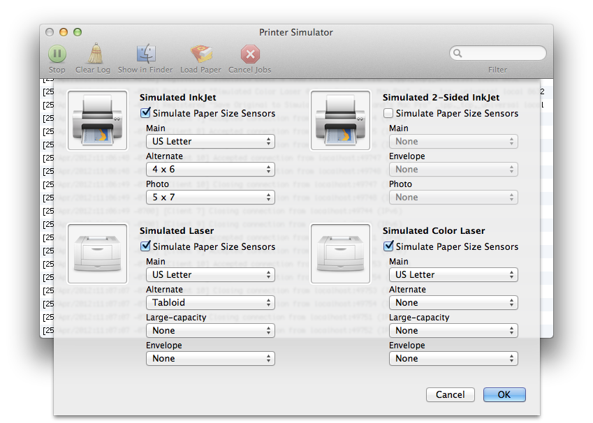

The Load Paper Dialog simulates paper size sensors. Some AirPrint printers include technology that senses the sizes of the paper loaded in the paper trays. This will become more common in future AirPrint printers. AirPrint will dynamically determine the paper size loaded, and automatically format printed content to fit the size of paper in the printer.

The Load Paper Dialog
An iOS application that simply provides printable content using the UIPrintInteractionController printingItem or printingItems API's will automatically have the printable content sized for the paper size detected. The UIPrintInteractionController printPaper property will represent the paper size and printable area detected. An application that includes a UIPrintPageRenderer subclass will use the UIPrintPageRenderer paperRect and printableRect to format content, and the sizes represented by those properties will automatically reflect the paper size loaded.
An iOS application that implements the UIPrintInteractionControllerDelegate protocol, and chooses a UIPrintPaper using printInteractionController:choosePaper: method should be aware that when a printer knows the paper size or sizes loaded, the array of papers provided in the paperList parameter will only include the size or sizes loaded at the printer. An application expecting a specific size in the array provided in the paperList parameter must be able to gracefully handle different sizes.
By default the Simulated InkJet, Simulated 2-Sided InkJet, and Simulated Color Laser all simulate AirPrint printers with paper size sensors. Clicking on the Simulate Paper Size Sensors checkbox item will toggle this setting. Each printer has a set of trays, and each tray can be configured to simulate having a paper size loaded, or none. Each printer supports a different set of paper sizes. Click OK to configure the printers with the provided settings (this will cause the simulated printers to restart and disgard any currently printing jobs).